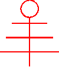
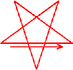
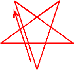
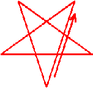
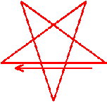
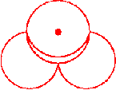
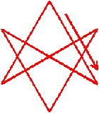

[The title is Latin and means Book 5 or Book of the Prince. Regulus is also the name of the star which marks the beginning or 0 degree of the constellation Leo.]
The Oath of the Enchantment, which is called the Elevenfold Seal.

The Animadversion towards the Æon.
The Vertical Component of the Enchantment.
The Horizontal Component of the Enchantment.
(Thus shall he formulate the Sigil of the Grand Hierophant, but dependent from the Circle.)
The Asserveration of the Spells.
(Thus shall be declared the Words of Power whereby the Energies of the Æon of Horus work his Will in the world.)
The Proclamation of the Accomplishment
| 1. | Let the Magician, still facing Boleskine, advance to the circumference of his Circle. | |
| 2. | Let him turn himself towards the left, and pace with the stealth and swiftness of a tiger the precincts of his circle, until he complete one revolution thereof. | |
| 3. | Let him give the sign of Horus (or the Enterer) as he passeth, so to project the Force that radiateth from Boleskine before him. | |
| 4. | Let him pace his Path until he comes to the North; there let him halt, and turn his face to the North. | |
| 5. | Let him trace with his Wand the Averse Pentagram proper to invoke Air (Aquarius). |  |
| 6. | Let him bring the Wand to the Centre of the Pentagram and call upon NUIT! | |
| 7. | Let him make the sign called Puella, standing with his feet together, head bowed, his left hand shielding the muladhara cakra, and his right hand shielding his breast (attitude of the Venus de Medici). | |
| 8. | Let him turn again to the Left, and pursue his Path as before, projecting the Force from Boleskine as he passeth; let him halt when he next cometh to the South, and face outward. | |
| 9. | Let him trace the Averse Pentagram that invoketh Fire (Leo). |  |
| 10. | Let him point his Wand to the Centre of the Pentagram, and cry HADIT! | |
| 11. | Let him give the sign Puer, standing with feet together and head erect. Let his right hand (the thumb extended at right angles to the fingers) be raised, the forearm vertical at a right angle with the upper arm, which is horizontally extended in the line joining the shoulders. Let his left hand, the thumb extended forwards, and the fingers clenched, rest at the junction of the thighs (attitudes of the gods Mentu, Khem, etc.). | |
| 12. | Let him proceed as before; then in the East, let mim make the Averse Pentagram that invoketh Earth (Taurus). |  |
| 13. | Let him point his Wand to the Centre of the Pentagram, and cry THERION! | |
| 14. | Let him give the sign called Vir, the feet being together. The hands, with clenched fingers and thumbs thrust out forwards, are held to the temples; the head is then bowed and pushed out, as if to symbolize the butting of an horned beast (attitude of Pan, Bacchus, etc.). (Frontispiece, Equinox I(3)). | |
| 15. | Proceding as before, let him make in the West the Averse Pentagram whereby Water is invoked. |  |
| 16. | Pointing the Wand to the Centre of the Pentagram, let him call upon BABALON! | |
| 17. | Let him give the sign Mulier. The feet are widely separated, and the arms raised so as to suggest a crescent. The head is thrown back (attitude of Baphomet, Isis in Welcome, the Microcosm of Vitruvius). (See Book 4, Part II). | |
| 18. | Let him break into the dance, tracing a centripetal spiral widdershins, enriched by revolutions upon his axis as he passeth each Quarter, until he come to the centre of the Circle. There let him halt, facing Boleskine. |  |
| 19. | Let him raise the Wand, trace the Mark of the Beast, and cry AIWAZ! | |
| 20. | Let him trace the Invoking Hexagram of The Beast. |  |
| 21. | Let him lower theWand, striking the Earth therewith. | |
| 22. | Let him give the sign of Mater Triumphans. (The feet are together; the left arm is curved as if it supported a child; the thumb and index finger of the right hand pinch the nipple of the left breast, as if offering it to that child.) Let him utter the word THELEMA!2 | |
| 23. | Perform the Spiral Dance, moving deosil and whirling
widdershins. Each time on passing th West extend the Wand to the Quarter in question, and bow:
|
|
(This dance may be omitted, and the whole utterance chanted in the attitude of Ptah.)
This is identical with the first gesture.
(Here followeth an impression of the ideas implied in this Pæan)
I also am a Star in Space, unique and self-existent, an individual essence
incorruptible; I also am one Soul; I am identical with All and None. I am in All
and all in me; I am, apart from all and lord of all, and one with all. I am the All, for all that exists for me is a necessary expression in thought
of some tendency of my nature, and all my thoughts are only the letters of my
Name.
I am the One, for all that I am is not the absolute All, and all my all is
mine and not another's; mine, who conceive of others like myself in essence and
truth, yet unlike in expression and illusion.
I am the None, for all that I am is the imperfect image of the perfect; each
partial phantom must perish in the flasp of its counterpart, each form fulfil
itself by finding its equated opposite, and satisfying its need to be the
Absolute by the attainment of annihilation.
The World LAShTAL includes all this. L is "Justice," the Kteis fulfilled by the Phallus,
"Naught and Two" because the plus and the minus have united in
"love under will."
A is "The Fool," Naught in Thought (Parzival), Word (Harpocrates),
and Action (Bacchus). He is the boundless air, and the wandering Ghost, but with
"possibilities." He is the Naught that the Two have made by "love
under will."
LA thus represents the Ecstasy of Nuit and Hadit conjoined, lost in love, and
making themselves Naught thereby. Their child is begotten and conceived, but is
in the phase of Naught also, as yet. LA is thus the Universe in that phase, with
its potentialities of manifestation.
AL, on the contrary, though it is essentially identical with LA, shows
"The Fool" manifested through the Equilibrium of Contraries. The
wieght is still nothing, but it is expressed as it were two equal weights in
opposite scales. The indicator still points to zero.
ShT is equally 31 with LA and AL, but it expresses the secret nature which
operates the Magick or the transmutations.
ShT is the formula of this particular Æon; another æon might have another
way of saying 31.
Sh is Fire as T is Force; conjoined they express Ra-Hoor-Khuit.
"The Angel"3 represents the Stèle 666, showing
the Gods of the Æg;on, while "Strength" is a picture of Babalon and
the Beast, the earthly emissaries of those Gods.
ShT is the dynamic equivalent of LA and AL. Sh shows the Word of the Law,
being triple, as 93 is thrice 31. T shows the formula of Magic declared in that
Word; the Lion, the Serpent, the Sun, Courage and Sexual Love are all indicated
by the card.
In LA note that Saturn or Satan is exalted in the House of Venus or Astarté
and it is an airy sign. Thus L is Father-Mother, Two and Naught, and the Spirit
(Holy Ghost) of their Love is also Naught. Love is AHBH, 13, which is AChD.
Unity, 1, aleph. who is "The Fool" who is Naught, but none the
less an individual One, who (as such) is not another, yet unconscious of himself
until his Oneness expresses itself as a duality.
Any impression or idea is unknowable in itself. It can mean nothing until
brought into relation with other things. The first step is to distinguish one
thought from another; this is the condition of recognizingg it. To define it, we
must perceive its orientation to all our other ideas. The extent of our
knowledge of any one thing varies therefore with the number of ideas with which
we can compare it. Every new fact not only adds itself to our universe, but
increases the value of what we already possess.
In AL this "The" or "God" arranges for "Countenance
to behold countenance,"4 by establishing itself as an
equilibrium, A the One-Naught conceived as L the Two-Naught. This L is the
Son-Daughter Horus-Harpocrates just as the other L was the Father-Mother
Set-Isis. Here then is Tetragrammaton once more, but expressed in identical
equations in which every term is perfect in itself as a mode of Naught.
ShT supplies the last element; making the Word of either five or six letters,
according as we regard ShT as one letter or two. Thus the Word affirms the Great
Work accomplished: 5°=6°.
ShT is moreover a necessary resolution of the apparent opposition of LA and
AL; for one could hardly pass to the other without the catalytic action of a
third identical expression whose function should be to transmute them. Such a
term must be in itself a mode of Naught, and its nature cannot encroach on the
perfections of Not-Being, LA, or of Being, AL. It must be purely Nothing-Motion
as they are purely Nothing-Matter, so as to create a Matter-in-Motion which is a
function of "Something."
Thus ShT is Motion in its double phase, an inertia compose of two opposite
current, and each current is also thus polarized. Sh is Heaven and Earth, T Male
and Female; ShT is Spirit and Matter; one is the word of Liberty and Love
flashing its Light to restore Life to Earth, the other is the act by which Life
claims that Love is Light and Liberty. And these are Two-in-One, the divine
letter of Silence-in-Speech whose symbol is the Sun in the Arms of the Moon.5
But Sh and T are alike formulæ of force in action as opposed to entities;
they are not states of existence, but modes of motion. They are verbs, not
nouns.
Sh is the Holy Spirit as a "tongue of fire" manifest in triplicity,
and is the child of Set-Isis as their logos or Word uttered by their
"Angel." The card is XX, and 20 is the value of yod (the secret
seed of all things, the Virgin, "The Hermit," Mercury, the Angel or
Herald) expressed in full as IVD. Sh is the spiritual congress of Heaven and
Earth.
But T is the Holy Spirit in action as a "roaringg Lion" or as
"the old Serpent" instead of an "Angel of Light." The twins
of Set-Isis, harlot and beast, are busy with that sodomitic and incestuous lust
which is the traditional formula for producing demi-gods, as in the cases of
Mary and the Dove, Leda and the Swan, etc. The card is XI, the number of
Magick AVD: aleph "The Fool" impregnating the woman according
to the Word of yod, the Angel of the Lord! His sister has seduced her
brother Beast, shaming the Sun with her sin; she has mastered the Lion, and
enchanted the Serpent. Nature is outraged by Magick; man is bestialized and
woman defiled. The conjunction produces a monster; it affirms regression of
types. Instead of a man-God conceived of the Spirit of God by a virgin in
innocence, we are asked to adore the bastard of a whore and a brute, begotten in
shamefullest sin and born in most blasphemous bliss.
This is in fact the formula of our Magick; we insist that all acts must be
equal; that existence asserts the right to exist; that unless evil is a mere
term expressing some relation of haphazard hostility between forces equally
self-justified, the universe is as inexplicable and impossible as uncompensated
action; that the orgies of Bacchus and Pan are no less sacramental than the
Masses of Jesus; that the scars of syphilis are sacred and worthy of honour as
much as the wounds of the martyrs of Mary.
It should be unnecessary to insist that the above ideas apply only to the
Absolute. Toothache is still painful, and deceit degrading, to a man, relatively
to his situation in the world of illusion; he does his Will by avoiding them.
But the existence of "Evil" is fatal to philosophy so long as it is
supposed to be independent of conditions; and to accustom the mind to "make
no difference" between any two ideas6 as such is to
emancipate it from the thralldom of terror.
We affirm on our altars our faith in ourself and our wills, our love of all
aspects of the Absolute All.
And we make the Spirit shin combine with the Flesh teth int a
single letter, whose value is 31 even as those of LA the Naught, and AL the All,
to complete their Not-Being and Being with its Becoming, to mediate between
identical extremes as their mean—the secret that sunders and seals them.
It declares that all somethings are equally shadows of Nothing, and justifies
Nothing in its futile folly of pretending that something is stable, by making us
aware of a method of Magick through the practice of which we may partake in the
pleasure of the process.
The Magician should devise for himself a definite technique for destroying
"evil." The essence of such a practice will consist in training the
mind and the body to confront things which case fear, pain, disgust,*
shame and the like. He must learn to endure them, then to become indifferent to
them, then to become indifferent to them, then to analyze them until they give
pleasure and instruction, and finally to appreciate them for their own sake, as
aspects of Truth. When this has been done, he should abandon them, if they are
really harmful in relation to health and comfort. Also, our selction of
"evils" is limited to those that cannot damage us irreparably. E.g.,
one ought to practice smelling assafoetida until one likes it; but not arsine or
hydrocyanic acid. Again, one might have a liaison with an ugly old woman until
one beheld and loved the star which she is; it would be too dangerous to
overcome the distaste for dishonesty by forcing oneself to pick pockets. Acts
which are essentially dishonourable must not be done; they should be justified
only by calm contemplation of their correctness in abstract cases.
Love is a virtue; it grows stronger and purer and less selfish by applying it
to what it loathes; but theft is a vice involving the slave-idea that one's
neighbour is superior to oneself. It is admirable only for its power to develop
certain moral and mental qualities in primitive types, to prevent the atrophy of
such faculties as our own vigilance, and for the interest which it adds to the
"tragedy, Man."
Crime, folly, sickness and all such phenomena must be contemplated with
complete freedom from fear, aversion, or shame. Otherwise we shall fail to see
accurately, and interpret intelligently; in which case we shall be unable to
outwit and outfight them. Anatomists and physiologists, grappling in the dark
with death, have won hygeine, surgery, prophylaxis and the rest for mankind.
Anthropologists, archæologists, physicists and other men of science, risking
thumbscrws, stake, infamy and ostracism, have torn the spider-snare of
superstition to shreds and broken in pieces the monstrous idol of Morality, the
murderous Moloch which has made mankind its meat throughout history. Each
fragment of that coprolite it manifest as an image of some brute lust, some
torpid dullness, some ignorant instinct, or some furtive fear shapen in his own
savage mind.
Man is indeed not wholly freed, even now. He is still trampled under the
hoofs of the stampeding mules that nightmare bore to his wild ass, his creative
forces that he had not mastered, the sterile ghosts that he called gods. Their
mystery cows men still; they fear, they flinch, they dare not face the phantoms.
Still, too, the fallen fetich seems awful; it is frightful to them that there is
no longer an idol to adore with anthems, and to appease with the flesh of their
firstborn. Each scrambles in the bloody mire of the floor to snatch some scrap
for a relic, that he may bow down to it and serve it.
So, even today, a mass of maggots swarm heaving over the carrion earth, a
brotherhood bound by blind greed for rottenness. Science still hesitates to
raise the Temple of Rimmon, though every year finds more of her sons impatient
of Naaman's prudence. The Privy Council of the Kingdom of Mansoul sits in
permenant scret session; it dares not declare what must follow its deed in
shattering the monarch Morality into scraps of crumbling conglomerate of of
climatic, tribal, and person prejudices, corrupted yet more by the action of
crafy ambition, insane impulse, ignorant arrogance, superstitious hysteria, fear
fashioning falsehoods on the stone that it sets on the grave of Truth whom it
has murdered and buried in the black earth Oblivion. Moral philosophy,
psychology, sociology, anthropology, mental pathology, physiology, and many
another of the children of Wisdom, of whom she is justified, well know that the
laws of Ethics are a chaos of confused conventions, based at best on customs
convenient in certain conditions, more often on the craft or caprice of the
biggest, the most savage, heartless, cunning and blood-thirsty brutes of the
pack, to secure their power or pander to their pleasure in cruelty. There is no
principle, even a false one, to give coherence to the clamour of ethical
propositions. Yet the very men that have smashed Moloch, and strewn the earth
with shapeless rubble, grow pale when they so much as whisper among themselves:
"While Moloch ruled all men were bound by one law, and by the oracles of
them that, knowing the fraud, feared not, but were his priests and wardens of
his mystery. What now? How can any of us, though wise and strong as never was
known, prevail on men to act in concert, now that each prays to his own chip of
God, and yet knows every other chip to be a worthless ort, dream-dust, ape-dung,
tradition-bone, or—what not else?"
So Science begins to see that the Initiates were maybe not merely silly and
selfish in making their rule of silence, and in protecting Philosophy from the
profane. Yet still she hopes that the mischief may not prove mortal, and begs
that things may go on much as usual until that secret session decide on some
plan of action.
It has always been fatal when somebody finds out too much too suddenly. If
John Huss had cackled more like a hen, he might have survived Michaelmas, and
been esteemed for his eggs. The last fifty years have laid the axe of analysis
to the root of every axiom; they are triflers who content themselves with
lopping the blossoming twigs of our beliefs, or the boughs of our intellectual
instruments. We can no longer assert any single proposition, unless we guard
ourselves by enumerating countelss conditions which must be assumed.
This digression has outstayed its welcome; it was only invited by Wisdom that
it might warn Rashness of the dangers that encompass even Sincerity, Energy and
Intelligence when they happen not to contribute to Fitness-in-their-environment.
The Magician must be wary in his use of his powers; he must may every act not
only accord with his Will, but with the properties of his position at the time.
It might be my Will to reach the foot of a cliff; but the easiest way—also the
speediest, most direct least obstructed, the way of minimum effort—would be
simply to jump. I should have destroyed my Will in the act of fulfilling it, or
what I mistook for it; for the True Will has no goal; its nature being To Go.
Similarly, a parabola is bound by one law which fixes its relations with two
straight lines at every point; yet it has no end short of infinity, and it
continually changes its direction. The Initiate who is aware Who he is can
always check is conduct by reference to the determinants of his curve, and
calculate his past, his future, his bearings, and his proper course at any
assigned moment; he can even comprehend himself as a simple idea. He may attain
to measure fellow-parabolas, ellipses that cross his path, hyperbolas that span
all space with their twin wings. Perhaps he may come at long last, leaping
beyond the limits of his own law, to conceive that sublimely stupendous outrage
to Reason, the Cone! Utterly inscrutable to him, he is yet well aware that he
exists in the nature thereof, that he is necessary thereto, that he is ordered
thereby, and that therefrom he is sprung, from the loins of so fearful a Father!
His own infinity becomes zero in relation to that of the least fragment of the
solid. He hardly exists at all. Trillions multiplies by trillions of trillions
of such as he could not cross the frontier even of breadth, the idea which he
came to guess at only becuase he felt himself bound by some mysterious power.
Yet breadth is equally a nothing in the presence of the Cone. His first
conception must evidently be a frantic spasm, formless, insane, not to be
classed as an articulate thougght. Yet, if he develops the faculties of his
mind, the more he knows of it the more he sees that its nature is identical with
his own whenever comparision is possible.
The True Will is thus both determined by its equations, and free because
those equation are simply its own name, spelt out fully. His sense of being
under bondage comes from his inability to read it; his sense that evil exists to
thwart him arises when he begins to learn to read, reads wrong, and is obstinate
that his error is an improvement.
We know one thing only. Absolute existence, absolute motion, absolute
direction, absolute simultaneity, absolute truth, all such ideas: they have not,
and never can have, any real meaning. If a man in delirium tremens fell
into the Hudson River, he might remember the proverb and clutch at an imaginary
straw. Words such as "truth" are like that straw. Confusion of thought
is concealed, and its impotence denied, by the invention. This paragraph opened
with "We know": yet, quesitoned, "we" make haste to deny the
possibility of possessing, or even of defining, knowledge. What could be more
certain to a parabola-philosopher that he could be approached in two ways, and
two only? It would be indeed little less that the whole body of his knowledge,
implied in the theory of his definition of himself, and confirmed by every
single experience. He could receive impressions only be meeting A, or being
caught up by B. Yet he would be wrong in an infinite number of ways. There are
therefore Aleph-Zero7 possibilities that at any moment a
man may find himself totally transformed. And it may be that our present dazzled
bewilderment is due to our recognition of the existence of a new dimension of
thought, which seems so "inscrutably infinite" and "absurd"
and "immoral," etc.—because we have not studied it long
enough to appreciate that its laws are identical with our own, though extended
to new conceptions. The discovery of radioactivity created a momentary chaos in
chemistry and physics; but it soon led to a fuller interpretation of the old
ideas. It dispersed many difficulties, harmonized many discords, and—yea,
more! It shewed the substance of Universe as a simplicity of Light and Life,
manners to compose atoms, themselves capable of deeper self-realization through
fresh complexities and organizations, each with its own peculiar powers and
pleasures, each pursuing its path througggh the world where all things are
possible. It revealed the omnipresence of Hadit, identical with Himself, yet
fulfilling Himself by dividing His interplay with Nuit into episodes, each form
of his energy isolated with each aspect of Her receptivity, delight developing
delight continuous from complex to complex. It was the voice of Nature awakening
at the dawn of the Æon, as Aiwaz uttered the Word of the Law of Thelema.
So also shall he who invoketh often behold the Formless Fire, with trembling
and bewilderment; but if he prolong his meditation, he shall resolve it into
coherent and intelligibile symbols, and he shall hear the articulate utterance
of that Fire, interpret the thunder thereof as a still small voice in his heart.
And the Fire shall reveal to his eyes his own image in its own true glory; and
it shall speak in his ears the mystery that is his own right Name.
This then in the virtue of the Magick of The Beast 666, and the canon of its
proper useage; to destroy the tendency to discriminate between any two things in
theory, and in practice to pierce the veils of every sanctuary, pressing forward
to embrace every image; for there is none that is not very Isis. The Inmost is
one with the Inmost; yet the form of the One is not the form of the other;
intimacy exacts fitness. He therefore who liveth by air, let him not be bold to
breathe water. But mastery cometh by measure: to him who with labour, courage,
and caution giveth his life to understand all that doth encompass him, and to
prevail against it, shall be increase. "The word of Sin is
Restriction": seek therefore Righteousness, enquiring into Iniquity, and
fortify thyself to overcome it. *: The people of England have made two revolutions to
free themselves from Popish fraud and tyranny. They are at their tricks again;
and if we have to make a Third Revolution, let us destroy the germ itself!
Notes This ritual was first published in Appendix VI of Magick in Theory and
Practice. The text above is taken from the version published in Magick:
Book 4 Parts I-IV which corrects a few errors and omissions in the original
edition. 1: THELEMA, AGAPÉ, and AUMGN in Greek in the original.
FIAOF or VIAOV (Hebrew, Vau-Yod-Aleph-Ayin-Yod = 93) is a variation of the
formula of IAO dicussed by Crowley in Chapter V of Magick in Theory and
Practice. AUMGN is an exention of AUM described in Chapter VII of Magick. Text © Ordo Templi Orientis. Copies and printouts may be made for personal
use and research and may be distributed to others provided no charge apart from
reasonable costs of copying and postage is made and this notice or an equivalent
is included. Key entry and HTML coding by Frater T.S. for Sunwheel Oasis, Leeds. May need
further proof reading.
LA—Naught.
AL—Two.
2: THELEMA in Greek letters in the original.
3: A name sometimes used for Tarot Trump XX, more usually
called "Judgement" or "the Last Judgement." In Crowley's
Thoth deck it is called The Æon – T.S.
4: The quote is from the "Sepher Dtznouthia" or
"Book of Concealment," a Qabalistic text translated by Mathers from
the Latin of Von Rosenroth and published in Kabbalah Unveiled.
5: The double letter ShT is glyphed by writing the Greek
equivalents of Shin-Teth, Sigma-Theta, using the variant form of the capital
Sigma which looks the the Latin C. The result looks like Crowley's "Sun and
Moon conjoined" symbol.
6: The allusion is to AL I. 22, which reads: "Let
there be no difference made among you between any one thing & any other
thing; for thereby there cometh hurt."
7: Should probably be read Aleph-Null, written as the
Hebrew letter Aleph followed by a zero in subscript. The reference is to the
infinite set of cardinal numbers, the smallest infinite set; a set is said to
have Aleph-null members if its members can be put into one to one correspondence
with the set of natural numbers (0, 1, 2, 3, ...). On this definition, there are
as many signed integers (which includes negative numbers) as natural numbers,
and as many rational numbers (i.e., numbers which can be written as fractions,
one integer divided by another) as natural numbers. There are, however, more
real numbers; the real numbers cannot be put in a one-to-one correspondence with
the natural numbers, because they cannot be written in order; for whatever
ordering principle you use, given any two real numbers it will always be
possible to put one in between them. It is still a matter of debate whether
there exist any infinite sets between aleph-null and the continuum (the latter
being the set of real numbers).